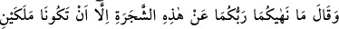
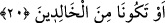

20. Derken şeytan, birbirine kapalı ayıp yerlerini kendilerine göstermek için
onlara vesvese verdi ve: Rabbiniz size bu ağacı sırf melek olursunuz veya ebedî
kalanlardan olursunuz diye yasakladı, dedi.
“Derken şeytan onların gizli” örtülü “kalan çirkin yerlerini” avret yerlerini
“kendilerine göstermek” açığa çıkarmak ve böylece onları günaha düşürmek “için
onlara vesvese verdi.”
Vesvese, şer‘an kötü olan şeyi süslemek için şeytanın insanın kalbine attığı
tekrarlanan gizli sözdür.
İblis’in Âdem ile Havva’ya ilk olarak kurduğu tuzak; onların karşısında,
duyduklarında onları üzecek şekilde hıçkırarak ağlamasıydı. Ona: “Seni kederlendirip
ağlatan nedir?” diye sordular. İblis: “Sizin halinize ağlıyorum. İkiniz de bir gün ölüp
gidecek ve içinde bulunduğunuz şu nimet ve ikramlardan ayrılacaksınız.” dedi. İblis’in
sözleri onları etkiledi. Yine onlara ayetin devamında gelecek sözlerini söyledi.
İblis, onları günaha düşürmek için vesvese vermiştir, avret yerlerinin açılması için
değil. Ancak vesvesesinin neticesinde avret yerleri açıldığı için avretlerinin açılması,
şeytanı vesvese vermeye sevk etme maksadı gibi gösterilmiştir.
İblis’in onlara vesvese verirken bunu kendilerini kötü duruma düşürmek için yapmış
olduğu mânâsı da çıkarılabilir. Avret yerlerinin açılmasıyle Âdem ile Havva’yı
meleklerin yanında küçük düşürmek istemiştir. İblis, meleklerin kitaplarından bazı
şeyleri okuduğu için, Âdem ile Havva’nın edep yerlerinin olduğunu biliyordu. Fakat
Âdem (a.s.)’ın, bundan haberi yoktu.
Şeytan’ın onların avret yerlerini açtırmak istemesi delâlet eder ki, yalnızken ya da
eşinin yanında gereksiz yere avret yerinin açılması insanın fıtratına aykırı çirkin ve
müstehcen bir davranıştır. Nitekim Hz. Ali (k.v.), Rasûlullah (s.a.v.)’in cemâline baktığı
gözlerle, kendi edeb yerine bakmaktan haya etmiştir. İnsanın kendi avret yerine bakması
böyle çirkin olursa, başkasının avret yerine bakmak ya da başkalarının yanında avret
mahallini açmak ne acınacak bir durumdur. Avretini açmak ne çirkin şeydir.
Hz. Aişe (r. anha) Rasûlullah (s.a.v.)’i kastederek: “Ne o benden, ne de ben ondan bir
şey gördüm.” buyurmuştur.
Hz. Âdem ve Havvâ, kendi avretlerini ve birbirlerinin avretlerini görmezlerdi.
Çünkü, onlara avret yerlerini örten birer elbise giydirilmişti. Avret yerlerine “çirkin
yerler” denilmesi, onları açmak insan için çirkin olduğu içindir.
“Onlara: “Rabb’iniz, başka bir sebepten dolayı değil, sırf ikiniz de birer melek”
yani melekler gibi bünyeleri latif, yeme içme ve benzerlerine ihtiyacı olmayan varlıklar
olursunuz “ya da” hiç ölmeyip cennette “ebedî kalıcılardan olursunuz diye sizi şu
ağaçtan” onun meyvesini yemekten “men etti.” dedi.”
Meleklerin bazı yönlerden üstün olmaları, onların mutlak mânâda peygamberlerden